Introduction
Le Mode Maximum est un mode où on affronte des séries de combattantss contrôlés par l'ordinateur du jeu. Le but est de tous les vaincre et on a à la clé de ce mode de jeu, les DP à l'infini et surtout la possibilité de débloquer Majin Vegeta (ou un autre personnage si vous n'avez pas tout complété)
L'objectif sera de montrer comment vaincre ce mode avec les différentes équipes possibles à disposition des joueurs débutants et expérimentés. Tout en mettant à chaque équipe le pourcentage de chance de battre les 3 niveaux en une seule fois.
Comment fonctionne le Mode Combat Z ?
Ce mode fonctionne de la manière suivante:
Les équipes pour réussir
On partira du principe qu'on a terminé le Mode Histoire et le Mode Combat Z. Donc on aura le droit à tous les personnages que l'on veut. Seulement le nombre de DP sera limité et tout au long du mode, on en gagnera des DP, donc le niveau des équipe est amené à augmenter.
Il y aura plusieurs équipes et cela sera divisé en 4 catégories
Liste d'équipes n°1: Les Equipes pour 7 DP
Pour ce mode et ce niveau, on peut reprendre les équipes utilisées pour le Mode Combat Z, mais de préférence celle utilisées après le Mode Histoire. Donc si vous avez déjà vu comment vaincre le Mode Combat Z vous pouvez allez plus loin.
On conmmence avec l'équipe n°1 qui est basée sur Metal Cooler mais qui aura deux variantes:
Les raisons pour cette équipe sont :
Pour la stratégie a adoptée, passons en revue les qualités des personnages et voyons ce que l'on peut faire avec :
Metal Cooler sera ici la seule force de frappe majeure de l'équipe, du haut de ses 5 DP il possède des attaques et de compétences très intéressantes:
Il a son Blaster de la mort qui couvre la moyenne portée et fait de bons dégâts tout en immobilisant l'ennemi, son Smash centrale est parfait pour frapper le centre et sur la longue distance,
tout en envoyant l'ennemi au loin et enfin son Nid de glace est excellent, il couvre la longue portée tout en faisant de meilleurs dégâts et fait réculer l'ennemi,
si on maintiens le bouton plus longtemps. Pour sa compétence, c'est là que le personnage est redoutable car s'il meurt mais qu'il a 150% d'énergie alors il revient à la vie,
ce qui peut renverser le combat.
Cell Jr est un personnage support fort intéressant seulement 2 DP , il a certes des dégâts qui ne font pas réver, mais sa force réside dans le fait qu'il gênera l'adversaire, en attaquant par derrière et l'empêchant de bouger.
Bardock est un personnage support excellent pour uniquement 2 DP , son but est de rechargé le Ki à 200 instantanément.
Pour ici, la stratégie sera concentrée autour Metal Cooler uniquement mais aussi de l'utilisation des supports voici une stratégie pour chaque version de l'équipe:
Tout au long du combat, le but sera de jouer agressif avec Metal Cooler en gardant la pression constante grâce à ses spéciaux. Mais pour vaincre l'ennemi au plus vite, le but sera de faire appel à Cell Jr qui bloquera l'adversaire, puis d'être au dessus de l'ennemi et de lui balancer le Nid de glace, qui en plus d'éloigner l'adversaire de notre position, lui fera extrêmement mal et vise tous les côtés. Répétez ceci et gagnez le combat facilement. Autrement vous pouvez simplement foncer sur l'adversaire, le frapper et le détruire avec vos spéciaux tout en utilisant Cell jr pour augmenter les dégâts.
Pour la version avec Bardock, il faudra faire attention à ne pas trop abuser de son aide, car on a le droit qu'à 5 utilisations. Le but ici sera de faire quasiment la même chose qu'avec Cell Jr, sauf qu'on va en abuser, jusqu'à enchaîner les attaques spéciales hautes, pour vaincre tout le monde. Sauf qu'ici Bardock aidera dans deux autres cas: l'Attaque Ultime et la Résurrection. Vu que Bardock donne le ki maximum, on peut l'utiliser pour plusieurs choses dont l'Attaque Ultime qui requit 200 de ki, si Metal Cooler est au plus bas de ses PV, il pourra lancer une Attaque Ultime qui anéantira l'ennemi. Autrement il pourra également se relever après un KO, grâce à sa capacité qui demande un KO et au minimum 150 de ki, ce qui fait que Metal Cooler grâce à Bardock est innarêtable.
Difficulté:
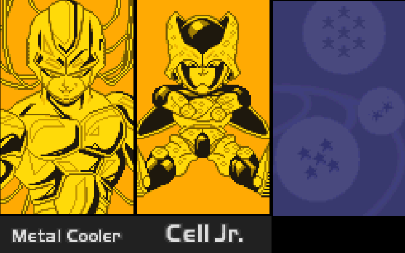
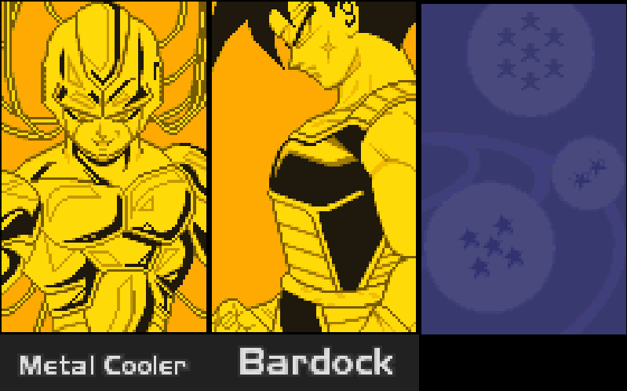
L'équipe suivante est l'équipe n°2 qui se compose de: Mecha Freezer et Cooler
Les raisons pour cette équipe sont :
Pour la stratégie a adoptée, passons en revue les qualités des personnages et voyons ce que l'on peut faire avec :
Mecha Freezer possède un plus large éventail d'attaque que sa forme de base: il a la particularité de faire en sorte que toutes ses attaques spéciales aient une grande portée, sa Danse maléfique tire de multiples rayons lasers, sa Mort au rabais créer plusieurs boules d'énergies qui se ressemblent autour de l'adversaire et explosent et enfin son Cauchemar explosif qui couvre la moyenne et longue distance, fait de bons dégâts et les boules d'énergies peut poursuivre l'adversaire. Egalement il peut se soigner avec sa capacité "Calme !", ce qui permet d'allonger sa longévité.
Cooler est un personnage fort qui malgré sa ressemblance avec Ginyu au niveau de son gameplay, se révèle être bien meilleur que lui. Il a de biens meilleurs dégâts en général, mais surtout il peut enchaîner les attaques spéciales et faire beaucoup plus mal. Sa Lame Sauzer peut faire mal à l'adversaire tout en cherchant loin, sa Pression Doore met la pression et empêche l'adversaire d'avancer et enfin son Electron Neizu, immbolise l'adversaire et fait mal. Il peut compter sur sa capacité "Honneur sauf" qui le booste en attaque après que Freezer soit vaincu.
Pour cette équipe, la stratégie sera bien plus tournée autour de Mecha Freezer qui sera là pour faire des dégâts en début de partie et vaincre un maximum d'adversaire, essayez de jouer aggressif en utilisant la puissance de Mecha Freezer jusqu'à que la plupart des ennemis tombent. Si Mecha Freezer se prend trop de dégâts activez sa capacité qui le soignera. Quant à Cooler, on l'utilisera directement après que Freezer soit vaincu, afin qu'il active sa compétence et frappe plus fort, l'objectif sera de finir le travail de Freezer en immobilisant l'ennemi avec Neizu et son électricité et finir avec des coups au corps-à-corps, c'est le meilleur moyen de faire mal rapidement et de finir le combat.
Difficulté:

On continue avec l'équipe n°3 qui est basée sur Bardock mais qui aura deux variantes:
Les raisons pour cette équipe sont :
Pour la stratégie a adoptée, passons en revue les qualités des personnages et voyons ce que l'on peut faire avec :
Goku Super Saiyan et Vegeta Super Saiyan sont semblables sur plusieurs points: ils sont des versions améliorées de Goku et Vegeta.
Ils ont en communs une meilleure vitesse, une meilleure force de frappe et surtout de meilleures attaques spéciales.
Pour Goku, il garde son Kamehameha mais ce dernier est plus grand et fait plus mal, son attaque spécial haute devient le Super Tir qui est chargeable,
peut prendre sur toutes les portées et surtout plus il est chargé, plus il fera de dégâts, lors du chargement complet, il peut retiré le quart de la vie d'un personnage d'un seul coup.
Sinon son attaqu spéciale basse est le super tirs qui est simplement un enchaînement rapide de kikohas qui gêne l'ennemi et en plus qui fait mal tout en gardant une pression constante car compliqué à esquiver ou encaisser.
Quant à Vegeta,on s'appuie sur le même principe, sauf que son Galick Gun devient le Final Flash qui comme Goku fait plus mal et est plus grand,
son attaque spécial basse devient une charge qui n'est pas blocable et met l'ennemi en dessous de soi et enfin comme Goku, il a une attaque chargée le Big Bang Attack,
qui comme Goku fait plus mal si on charge longtemps.
Bardock est un personnage support excellent pour uniquement 2 DP , son but est de rechargé le Ki à 200 instantanément.
Pour ici, la stratégie sera concentrée autour de Bardock et de comment il peut aider le personnage à 5 DP (Goku Super Saiyan ou Vegeta Super Saiyan), la stratégie sera la même quelque soit le combattant:
Comme avec Metal Cooler, le but de Bardock sera d'aider Goku ou Vegeta en leur fournissant du ki, ce qui leur permettra de vaincre rapidement les adversaires en leur balançant des attaques spéciales sans arrêt et de toujours avoir du ki. Egalement grâce à Bardock, Goku pourra se téléporter grâce à sa compétence et Vegeta se booster. S'il le combattant perd trop de PV, ils pourront balancer leur Attaque Ultime et en finir avec l'ennemi, juste pour Vegeta il faut être au dessus de l'ennemi et proche.
Difficulté:
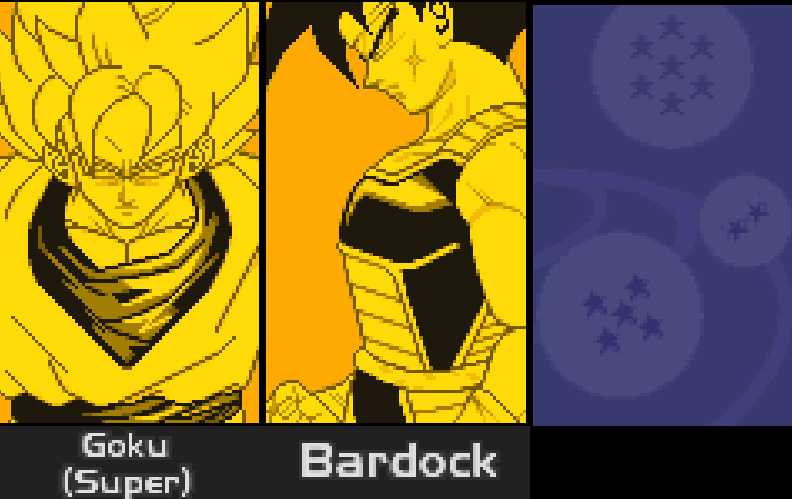

On poursuit avec l'équipe n°4 qui est basée sur le même principe que l'équipe 4, soit un personnage à 5 DP puissant et un support à 2 DP utile: Vegeta Super Saiyan et Dabra
Les raisons pour cette équipe sont :
Pour la stratégie a adoptée, passons en revue les qualités des personnages et voyons ce que l'on peut faire avec :
Comme dit précedemment Vegeta Super Saiyan est une version de Vegeta bien plus forte et utile:
Ses attaques sont là pour faire mal et garder l'ennemi loin de lui; son Final Flash est là pour faire mal sur la longue portée,
son attaque spécial basse est une charge qui n'est pas blocable et met l'ennemi au sol, donc pratique pour enchaîner avec l'attaque spéciale haute,
le Big Bang Attack qui fait plus mal si on charge longtemps.
Dabra est un personnage support très bon pour uniquement 2 DP , son but est empêcher l'ennemi d'agir tout en lui faisant mal avec ses attaques.
Pour ici, la stratégie sera comme celle de la team précédente:
Le but de Vegeta sera de frapper très fort et très vite en balançant des attaques spéciales tout en essayant d'avoir toujours avoir du ki. Dans les moments où il n'en aura pas ou qu'il est en mauvaise posture, c'est là que Dabra entre en jeu, lors de son activation, il viendra, lancera des attaques sans arrêts et durant ce laps de temps où l'adversaire ne pourra quasimenet rien faire, Vegeta charge son ki ou son attaque. Quand bien même l'ennemi essaie de mettre sa farde, cela ne marchera pas car sa garde sera brisé ou bien Vegeta viendra la briser et s'il essaie d'esquiver rien n'empêche Vegeta de le ramener vers Dabra. Seulement il faudra faire attention car on ne peut appeler un support que 5 fois et une projection peut effacer l'activation d'un personnage support.
Difficulté:

On enchaîne avec l'équipe n°5 qui est basée cette fois sur Mr Satan mais qui n'aura pas 2 mais 4 variantes:
Les raisons pour cette équipe sont :
Pour la stratégie a adoptée, passons en revue les qualités des personnages et voyons ce que l'on peut faire avec :
Les 4 personnages choisis sont semblables sur plusieurs points: ce sont les personnages qui sont les plus complets du jeu en dehors de ceux ayant 7DP:
Boo est un personnage qui tape fort, mais qui a surtout des compétences pour le combat rapproché et la longévité au combat. Ses attaques spéciales n'ont pas toujours une très bonne portée sauf pour l'Attaque Spéciale haute: Explosion de colère qui par contre, atteint quasiment toute la surface du terrain. Autrement les deux autres attaques spéciales sont là pour éloigner l'ennemi et garder la distance. Pour finir sa capacité lui permet de se soigner, ce qui est très fort pour un personnage lent comme lui.
Quant à Cell a des attaques spéciales qui font des énormes dégâts comme son Eclair ultime qui est l'Attaque Spéciale de C-18, mais en plus grand, plus grande portée et surtout qui frappe plus fort. Il y aussi sa Vague ultime qui est excellent sur énormément de points: il couvre toute les portées, explose à l'impact et fait super mal et enfin son Kamehameha qui va très loin et vise le haut avec un angle en biais pour éviter les esquives. Sa capacité lui permet de se booster et donc de frapper encore plus fort, mais, seulement s'il est à 30% de Pv ou moins.
Quant à Gohan Super Saiyan 2, il est fait du même bois que Cell, il frappe très fort, très rapidement et possède des attaques spéciales qui font auddi mal que Cell, mais elles ont un usage différent: son Kamehameha est aussi puissant que celui de Goku en Super Saiyan, si ce n'est plus, il garde le même usage et les mêmes caractéristiques, son Masenretsudan n'est pas fait pour faire des dégâts mais pour embêter l'adversaire, le tenir à distance et enfin son Magekidan est fort utile pout faire de gros dégâts et éloigner les adversaires s'approchant par le haut, cette attaque a une portée verticale immense et fait des dégâts sur l'entièreté de l'attaque. Sa capacité est plutôt utile quand il y a un deuxième combattant, elle s'activera uniquement si un allié est mit KO et que Gohan arrive sur le terrain, cela lui augmentera son attaque.
Quant à Broly, il a des attaques spéciales qui font des dégâts titanesques comme avec sa Coque explosive qui est une attaque Spéciale qui est lancé sur l'ennemi et qui en plus de lui faire super mal, lui fait du recul et l'immbolise durant un instant, son Geyser Planétaire est une immense colonne d'énergie qui fait remonté l'ennemi, lui fait mal et en plus Broly peut l'enchaîner durant l'attaque tout en étant invincible et enfin son Pic Géant et une projection qui bascule l'ennemi vers le sol et le renvoit au dessus de Broly qui peut enchaîner avec n'importe quoi. Sa capacité est là pour encore plus lui faire augmenter ses dégâts, quand il y a Son Goku en face, il frappe beaucoup plus fort, ce qui littéralement mettre KO après quelques coups, n'importe quel personnage non boss du jeu.
Mr Satan, est un personnage support excellent pour uniquement 1 DP ,c'est le meilleur support en dehors de Bardock, qui possède le Dp le plus bas, mais pour l'utilité la plus grande, ce personnage apparaît et lance des bombes dans tous les sens, littéralement il est imprévisible et fait super mal, ce qui permet d'immboliser, blesser l'adversaire et de laisser une faille au combattant pour vaincre l'ennemi en face.
Pour ici, la stratégie sera concentrée autour des personnages à 6 DP (Boo , Cell , Gohan Super Saiyan 2, Broly) et de comment Mr Satan peut les soutenir, la stratégie sera la même quelque soit le combattant, mais avec des spécificités en fonction de combattant:
Pour Boo, au vue de sa capacité à encaisser les dégâts puis de se soigner et du fait qu'il soit lent, on n'est pas obligé de jouer très agressif, on peut simplement foncer avec le sprint et attaquer parfois avec des coups simples ou des super attaques pour empêcher l'ennemi de trop avancer vers nous. Mr Satan sera bien plus pertinent qu'avec les autres, car Boo peut avoir recours à une Attaque en Duo qui fait véritablement mal, ce qui pourra compenser les dégâts moins bons du personnage par rapport aux autres. Si Boo perd des PV, il pourra se soigner partiellement et s'il est presque KO, il pourra utiliser son Attaque Ultime, qui le régènera une bonne partie. Autrement si vous n'êtes pas très patient, ne jouez pas sur la tankiness et le fait de donner des dégâts petit à petit et jouez la véritablement agressif; prenez Mr Satan, utilisez le, cela va bloquer l'ennemi, pendant ce temps chargez votre ki à 200, balancez lui une attaque en duo, puis toute de suite après réutilisez le et enchaîner les attaques spéciale basses qui bloqueront l'adversaire et lui feront super mal.
Pour Cell, l'approche sera différente, l'objectif sera de foncer sur l'ennemi et de le détruire très rapidement. Grâce à ses attaques spéciales, il pourrra finir rapidement. Si l'ennemi s'approche trop utilisez l'attaque spéciale qui l'éloignera directement, s'il est trop loin utilisez les deux autres qui lui fera encore plus mal et l'atteindront. Dans ce cas Mr Satan sera pertinent dans le cas où Cell est à cours de ki et qu'il faut le charger ou bien qu'il a besoin d'une ouverture pour frapper.
Pour Gohan, ce sera la même approche que Cell, il devra taper et au vu de sa vitesse supérieure à celles des autres personnages ici présents, il sera un personnage qui foncera sur l'adversaire tout en évitant les attaques pour ensuite faire mal. Mr Satan sera utilisé de la même manière qu'avec Cell, soit dans le cas où Gohan n'a pas de ki et donc doit le recharger ou bien pour chercher un moment où l'adversaire peut se faire attaquer pour ensuite le finir rapidement.
Pour Broly, ce sera presque comme avec Gohan et Cell, sauf que ce dernier a quasiment la même vitesse que Boo, du coup il faudra faire attention. Le but avec Broly, ce sera de faire du rentre dedans, de foncer sur l'adversaire, de l'étouffer sous les coups. Ave Mr Satan, cela compensera sa vitesse moyenne et lui permettra d'infliger encore plus de dégâts et de pouvoir forcer l'adversaire à être dans une position où il ne pourra rien faire d'autre que subir les assauts de Broly.
Difficulté:
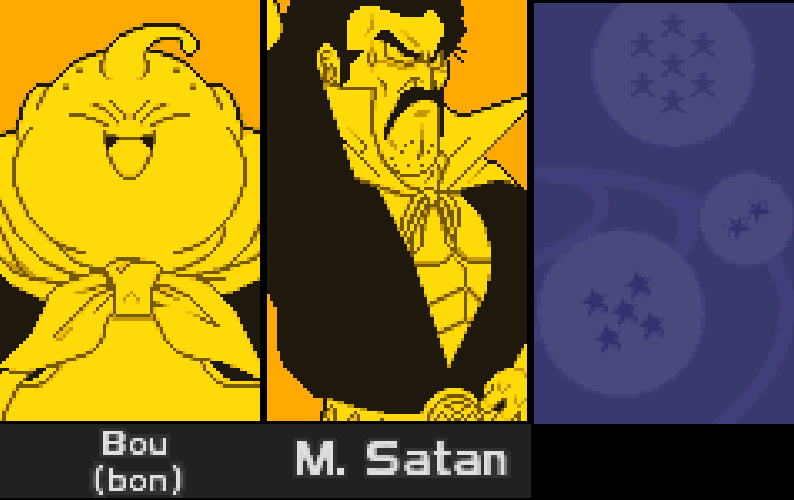
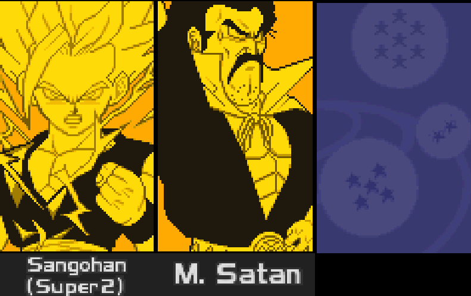
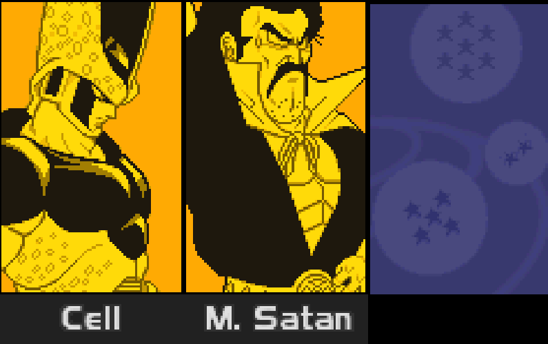
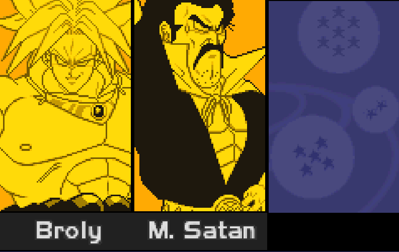
Pour finir avec les équipes pertinentes pour 7 DP, on termine avec l'équipe n°6 qui est basée sur un seul et unique personnage pour chacune des variantes :
Les raisons pour cette équipe sont :
Pour la stratégie a adoptée, passons en revue les qualités des personnages et voyons ce que l'on peut faire avec :
Gotenks Super Saiyan 3 est un personnage qui a des spéciaux impressionants, son Attaque du Sanglier permet de foncer sur l'adversaire et de passer outre certaines attaques, son Beignet Galactique est une charge qui en plus d'aller vite, fait super mal et permet d'être au dessus de l'adversaire à la fin de l'attaque pour enfin parler de l'attaque qui est sans doute la plus puissante du jeu: les SGKA ou les Super Ghost Kamikaze Attack qui sont en fait plusieurs fantômes explosifs lancés sur l'adversaire. Sa capacité permet de le bosster encore plus.
Boo (Mauvais) est également un personnage surpuissant qui possède des attaques spéciales incroyables: Il a la Plongée Furieuse qui est une projection quasiment inévitable si tu n'esquives pas ou si tu lui fais pas subir des dégâts avant, il plongera sur toi et te feras des dégâts, c'est parfait pour briser la garde de l'ennemi ou pour approcher un personnage trop compliqué à attaquer. Il a également la Pluie Offensive qui permet d'empêcher les adversaires de s'approcher et possède une excellente portée verticale, enfin son Brise Zex est l'une des meilleures attaques possibles, il projette de l'électricité qui immobilise l'ennemi et ce dernier ne peut rien. Tout comme Gotenks, il possède une capacité qui est très intéressante, lors de son activation, la jauge de défense augmentera, ce qui pourra briser plus facilement la garde de l'ennemi et donc le frapper.
Pour cette équipe là, la stratégie sera différente de d'habitude car n'ayant qu'un seul personnage mais commune aux deux avec toute de même des spécificités :
Le but ici sera de détruire directement l'adversaire, dans chacune des équipes vous avez les deux personnages les plus forts du jeu, frappez l'ennemi avec vos coups surpuissants et ne le laisser pas respirer.
Pour Gotenks, n'hésitez pas à abuser de vos spéciaux pour mettre la pression et garder le rythme, grâce à votre vitesse vous pouvez vous déplacer très vite partout sur le terrain, utilisez le combot dévastateur qu'est la combinaison du Beignet Galactique et SGKA: le Beignet Kamikaze. L'adversaire ne pourra pas supporter les dégâts après cet enchaînement, le comble est que Gotenks peut faire plusieurs fois cette attaque qu'est le SGKA pour multiplier les fantômes et faire encore plus de dégâts à l'adversaire et si par hasard l'adversaire s'achappe il peut toujours le pourchasser et lui fair encore plus mal, le tout dans l'explosion comme ça il est intouchable. De plus si les dégâts de Gotenks ne semblent pas assez ravageurs, vous pouvez activer sa capacité qui augmentera son attaque et lui permettra de trouer encore plus l'équipe adverse.
Pour Boo, ce sera la même chose que pour Gotenks, sauf que Boo (Mauvais) pourra compter sur son Brise Zex qui pourra être cumulable et immobolisera l'adversaire tout au long de l'affrontement, en plus d'aller super loin, il pourra le combiner à son propre corps-à-corps qui fait très mal, ce qui in fine tuera l'adversaire rapidement. De plus si les dégâts et la pression exercée par Boo ne sont pas suffisantes, il possède une capacité qui à chaque attaque portée, augmente la jauge de garde, soit le risque que la garde soit brisée et donc la possibilité de faire encore plus mal. La pression qu'il exercera, sera encore plus grande et les ennemis ne pourront pas lutter face à ça.
Difficulté:
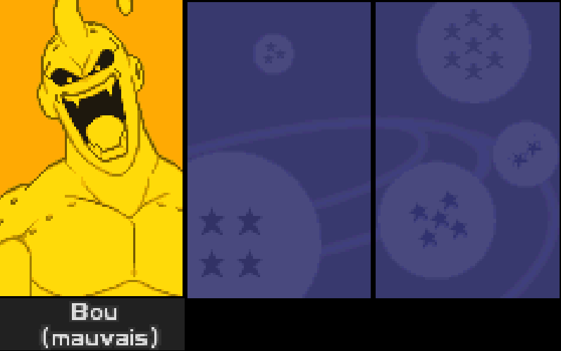
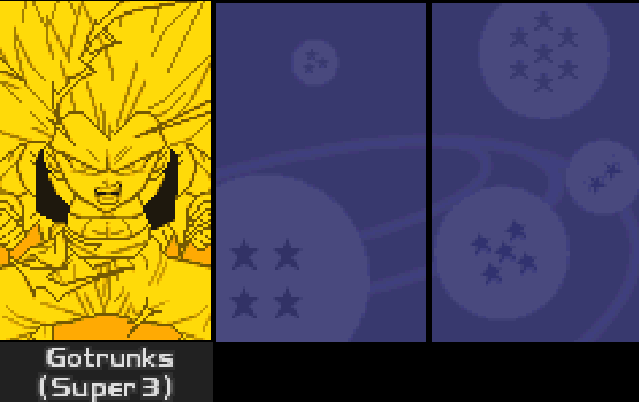
Liste d'équipes n°2: Les Equipes pour 9 DP
On commence avec les équipes ayant comme maximum 9DP avec l'équipe n°1 composée de Metal Cooler et Mecha Freezer
Les raisons pour cette équipe sont :
Passons d'abord en revue ce que les personnages peuvent faire d'intéressant:
Mecha Freezer possède un plus large éventail d'attaque que sa forme de base: il a la particularité de faire en sorte que toutes ses attaques spéciales aient une grande portée, sa Danse maléfique tire de multiples rayons lasers, sa Mort au rabais créer plusieurs boules d'énergies qui se ressemblent autour de l'adversaire et explosent et enfin son Cauchemar explosif qui couvre la moyenne et longue distance, fait de bons dégâts et les boules d'énergies peut poursuivre l'adversaire. Egalement il peut se soigner avec sa capacité "Calme !", ce qui permet d'allonger sa longévité.
Metal Cooler sera ici le finisseur de l'équipe, du haut de ses 5 DP il possède des attaques et de compétences très intéressantes: Il a son Blaster de la mort qui couvre la moyenne portée et fait de bons dégâts tout en immobilisant l'ennemi, son Smash centrale est parfait pour frapper le centre et sur la longue distance, tout en envoyant l'ennemi au loin et enfin son Nid de glace est excellent, il couvre la longue portée tout en faisant de meilleurs dégâts et fait réculer l'ennemi, si on maintiens le bouton plus longtemps. Pour sa compétence, c'est là que le personnage est redoutable car s'il meurt mais qu'il a 150% d'énergie alors il revient à la vie, ce qui peut renverser le combat.
Pour cette première équipe, la stratégie est assez simple, vous prenez Mecha Freezer en premier, vous essayez de battre un macimum d'adversaire grâce à vos attaques, vous devez vous régénérez avec Calme ! pour pouvoir tenir plus longtemps, dés lors que vous ne tenez plus, allez sur Metal Cooler et finissez le travail, sa force de frappe et ses attaques mettront à genoux les ennemis à bout de souffle.
Difficulté:
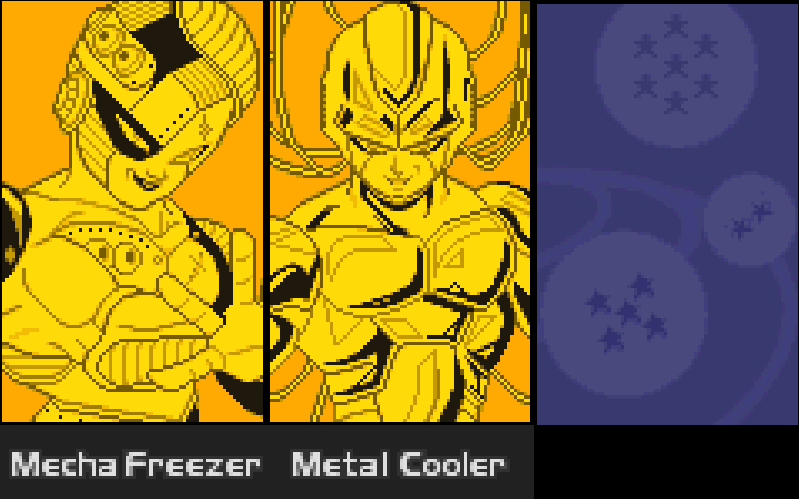
On continue avec l'équipe n°2 qui est basée sur Gotenks Super Saiyan 3 et Bardock
Les raisons pour cette équipe sont :
Passons d'abord en revue ce que les personnages peuvent faire d'intéressant:
Gotenks Super Saiyan 3 est un personnage qui a des spéciaux impressionants, son Attaque du Sanglier permet de foncer sur l'adversaire et de passer outre certaines attaques, son Beignet Galactique est une charge qui en plus d'aller vite, fait super mal et permet d'être au dessus de l'adversaire à la fin de l'attaque pour enfin parler de l'attaque qui est sans doute la plus puissante du jeu: les SGKA ou les Super Ghost Kamikaze Attack qui sont en fait plusieurs fantômes explosifs lancés sur l'adversaire. Sa capacité permet de le bosster encore plus.
Bardock est un personnage support excellent pour uniquement 2 DP , son but est de rechargé le Ki à 200 instantanément.
Pour cette seconde équipe, il faudra faire attention à ne pas trop abuser de son aide, car on a le droit qu'à 5 utilisations. Le but ici sera de faire quasiment la même chose qu'avec Cell Jr, sauf qu'on va en abuser, jusqu'à enchaîner les attaques spéciales hautes, pour vaincre tout le monde. Sauf qu'ici Bardock aidera dans deux autres cas: l'Attaque Ultime et la Résurrection. Vu que Bardock donne le ki maximum, on peut l'utiliser pour plusieurs choses dont l'Attaque Ultime qui requit 200 de ki, si Metal Cooler est au plus bas de ses PV, il pourra lancer une Attaque Ultime qui anéantira l'ennemi. Autrement il pourra également se relever après un KO, grâce à sa capacité qui demande un KO et au minimum 150 de ki, ce qui fait que Metal Cooler grâce à Bardock est innarêtable.
Difficulté:
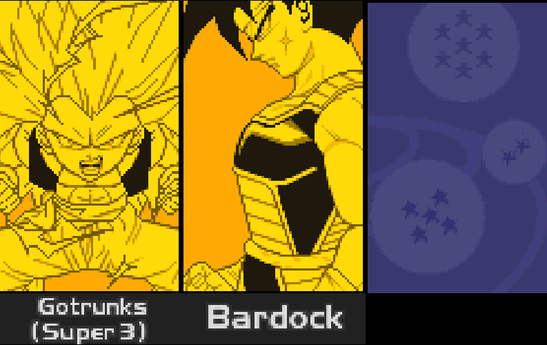
On poursuit avec l'équipe n°3 qui est basée sur l'équipe 2 mais avec Boo (Mauvais) et Dabra
Les raisons pour cette équipe sont :
Passons d'abord en revue ce que les personnages peuvent faire d'intéressant:
Boo (Mauvais) est un personnage surpuissant qui possède des attaques spéciales incroyables: Il a la Plongée Furieuse qui est une projection quasiment inévitable si tu n'esquives pas ou si tu lui fais pas subir des dégâts avant, il plongera sur toi et te feras des dégâts, c'est parfait pour briser la garde de l'ennemi ou pour approcher un personnage trop compliqué à attaquer. Il a également la Pluie Offensive qui permet d'empêcher les adversaires de s'approcher et possède une excellente portée verticale, enfin son Brise Zex est l'une des meilleures attaques possibles, il projette de l'électricité qui immobilise l'ennemi et ce dernier ne peut rien. Tout comme Gotenks, il possède une capacité qui est très intéressante, lors de son activation, la jauge de défense augmentera, ce qui pourra briser plus facilement la garde de l'ennemi et donc le frapper.
Dabra est un personnage support très bon pour uniquement 2 DP , son but est empêcher l'ennemi d'agir tout en lui faisant mal avec ses attaques.
Le but de Boo sera de frapper très fort et très vite en balançant des attaques spéciales tout en essayant d'avoir toujours avoir du ki. Dans les moments où il n'en aura pas ou qu'il est en mauvaise posture, c'est là que Dabra entre en jeu, lors de son activation, il viendra, lancera des attaques sans arrêts et durant ce laps de temps où l'adversaire ne pourra quasiment rien faire, Boo charge son ki ou son attaque ou bien il l'emprisonne dans son Brise Zex, ce qui pourra augmenter encore plus les dégâts. Quand bien même l'ennemi essaie de mettre sa garde, cela ne marchera pas car sa garde sera brisé ou bien Boo viendra la briser grâce à sa compétence et s'il essaie d'esquiver rien n'empêche Boo de le ramener vers Dabra. Seulement il faudra faire attention car on ne peut appeler un support que 5 fois et une projection peut effacer l'activation d'un personnage support.
Difficulté:
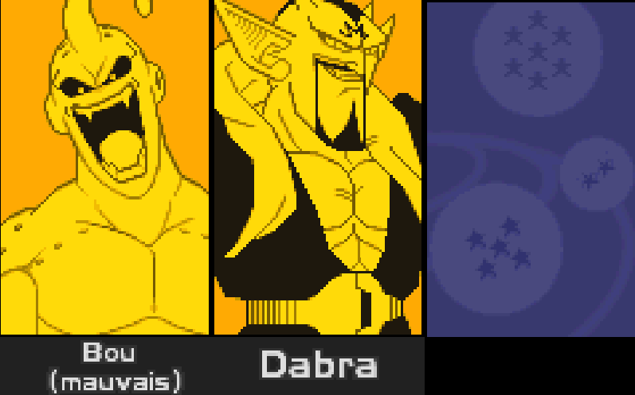
On enchaîne avec l'équipe n°4 qui est une équipe basée sur 4 personnages distincts :
Et les équipes proposées seront les suivants
Les raisons pour l'équipe 4-1 sont :
Les raisons pour l'équipe 4-2 sont :
Les raisons pour l'équipe 4-3 sont :
Passons d'abord en revue ce que les personnages peuvent faire d'intéressant:
Goku Super Saiyan et Vegeta Super Saiyan sont semblables sur plusieurs points: ils sont des versions améliorées de Goku et Vegeta. Ils ont en communs une meilleure vitesse, une meilleure force de frappe et surtout de meilleures attaques spéciales. Pour Goku, il garde son Kamehameha mais ce dernier est plus grand et fait plus mal, son attaque spécial haute devient le Super Tir qui est chargeable, peut prendre sur toutes les portées et surtout plus il est chargé, plus il fera de dégâts, lors du chargement complet, il peut retiré le quart de la vie d'un personnage d'un seul coup. Sinon son attaque spéciale basse est le super tirs qui est simplement un enchaînement rapide de kikohas qui gêne l'ennemi et en plus qui fait mal tout en gardant une pression constante car compliqué à esquiver ou encaisser. Sa compétence est la téléportation qu'il peut utiliser pour aller à l'opposé d'où il était et mettre de la distance entre lui ou son adversaire ou la rompre pour mieux le surprendre.
Quant à Vegeta,on s'appuie sur le même principe, sauf que son Galick Gun devient le Final Flash qui comme Goku fait plus mal et est plus grand, son attaque spécial basse devient une charge qui n'est pas blocable et met l'ennemi en dessous de soi et enfin comme Goku, il a une attaque chargée le Big Bang Attack, qui comme Goku fait plus mal si on charge longtemps. Pour sa capacité, si un adversaire possède un DP supérieur à lui, il augmentera son attaque, ce qui est assez pratique car dans la fin du Mode Maximum, les 3/4 des ennemis possèdent un plus grand DP que lui, ce qui est assez efficace.
Pour Trunks ,c'est presque la même chose, sauf qu'on remplace les coups d'épée par des projectiles d'énergies, son attaque spécial devient le Buster Cannon qui est utile pour toutes les portées et fait de bons dégâts, son attaque spécial basse devient le Buster Final qui est un énorme rayon d'énergie qui fait très mal et enfin comme Goku, il a une attaque chargée le Tir rapide, qui comme Goku fait plus mal si on charge longtemps. Pour ce qui est de sa capacité, Trunks peut simplement se booster en attaque et frapper plus fort.
Pour Gohan, il est un mixte entre Trunks et Goku, mais tout en restant Gohan, il possède un bon projectile en guise d'attaque spéciale, en guise d'attaque spéciale haute, il s'agit d'une floppée de Kikohas, ce qui rappelle Gohan SSJ2, ce qui est pratique pour embêter l'adversaire et enfin son attaque spéciale basse, il s'agit d'un grand Kamehameha qui possède le même angle que Cell, mais pas la même puissance. En soit c'est un personnage plutôt classique, mais ce qui le rend redoutable, c'est ses capacités, Gohan Ado est le seul personnage possédant 2 capacités, il possède le Super Saiyan qui le booste en attaque et la Libération de Potentiel qui le booste encore plus en attaque qu'avant, pour évaluer les dégâts de ce dernier, la forme Super Saiyan peut faire jeu égal avec les personnages à 5 DP que sont Goku et Vegeta Super Saiyan ou Metal Cooler et la forme Eveillé peut mettre à mal des personnages à 6 ou 7 DP comme Broly ou Boo (Mauvais), ce qui est juste incroyable pour un personnage à 4 DP seulement.
Ici l'objectif est simpliste :Frapper fort et vite sans devoir trop réfléchir.
Peut importe qui vous avez, le schéma sera simple, mais il y aura des différences stratégiques quasiment mineures:
Si vous avez l'équipe 4-1, il sera conseillé d'économiser Goku un maximum tout en faisant d'énorme dégâts à l'adversaire, puis faites la même chose avec Trunks.
Avec l'équipe 4-2, avec Trunks et Vegeta, on peut faire la même stratégie qu'avant, mais ce sera un peu différent car vous aurez une option en plus qui sera l'attaque en duo, qui sera véritablement utile pour que les combats ne s'éternisent pas. Activez là n'importe quand car les ennemis que vous ne pourrez pas vaincre avec de simples coups se feront avoir par l'attaque en duo.
Pour l'équipe 4-3, avec Goku et Gohan, on peut faire la même stratégie qu'avec l'équipe 4-2, mais en faisant encore mieux et c'est sans doute l'équipe la plus forte des 3: Ce sera encore un peu différent car vous aurez encore une option en plus qui sera: Gohan et sa compétence "Libération de Potentiel", qui sera véritablement utile pour que les combats s'éternisent encore moins. Activez là n'importe quand car les ennemis que vous ne pourrez pas vaincre avec de simples coups de Goku ou Gohan, se feront détruire par Gohan Eveillé. Autrement l'attaque en duo est vraiment pertinente si vous êtes avec Goku au début et si vous le perdez, activez la compétence de Gohan pour vous débarasser du reste.
Difficulté pour les équipes:
Equipe 4-1
Equipe 4-2
Equipe 4-3
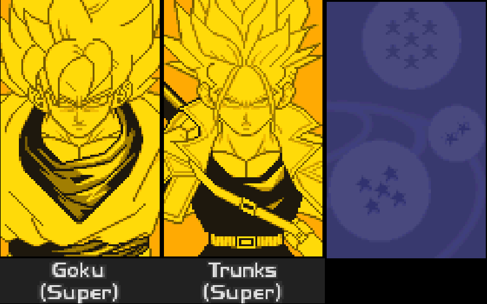
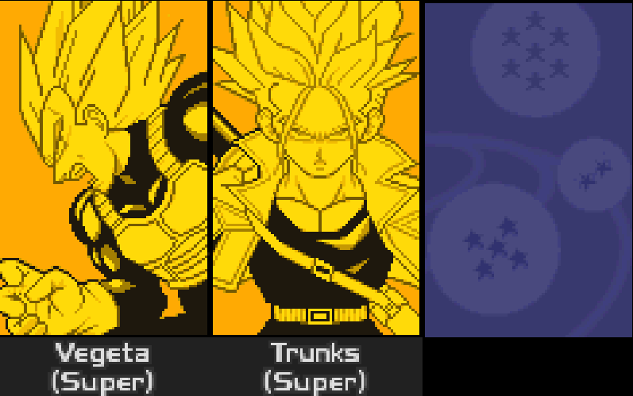
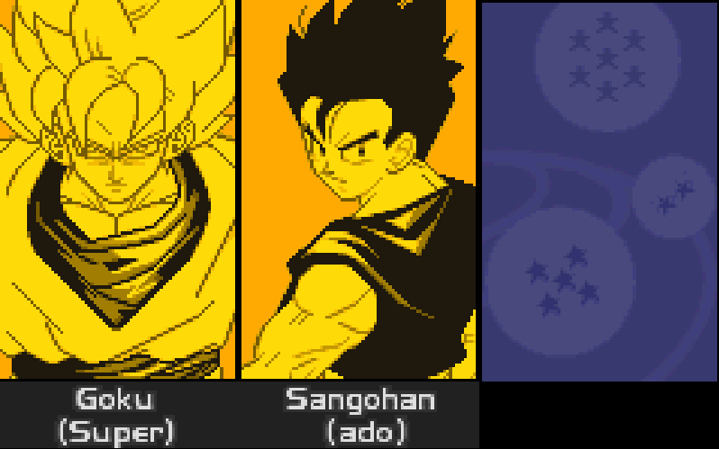
On continue avec l'équipe n°5 qui est encore basée sur Metal Cooler mais qui sera accompagné d'un autre support: Shenron
Les raisons pour cette équipe sont :
Pour la stratégie a adoptée, passons en revue les qualités des personnages et voyons ce que l'on peut faire avec :
Metal Cooler sera ici la seule force de frappe majeure de l'équipe, du haut de ses 5 DP il possède des attaques et de compétences très intéressantes:
Il a son Blaster de la mort qui couvre la moyenne portée et fait de bons dégâts tout en immobilisant l'ennemi, son Smash centrale est parfait pour frapper le centre et sur la longue distance,
tout en envoyant l'ennemi au loin et enfin son Nid de glace est excellent, il couvre la longue portée tout en faisant de meilleurs dégâts et fait réculer l'ennemi,
si on maintiens le bouton plus longtemps. Pour sa compétence, c'est là que le personnage est redoutable car s'il meurt mais qu'il a 150% d'énergie alors il revient à la vie,
ce qui peut renverser le combat.
Shenron est un personnage support fort intéressant pour 4 DP , son rôle sera de réabiliter les combattants Ko au combat.
Pour ici, la stratégie sera concentrée autour Metal Cooler uniquement mais aussi de l'utilisation de Shenron :
Tout au long du combat, le but sera de toujours jouer agressif avec Metal Cooler en gardant la pression constante grâce à ses spéciaux. Mais contrairement au Mode Combat Z où les ennemis sont relativement simples à battre, dans le Mode Maximum, il faudra faire bien plus attention, on ne possède qu'un seul personnage et surtout que les ennemis peuvent frapper très forts par moment, l'atout de Metal Cooler sera de rester sous 150 de Ki presque constamment au moment de sa mort, afin qu'il fasse deux choses: Se soigner avec sa capacité "Résurrection" et attaquer avec son ulti pour pouvoir dégommer l'adversaire en face et si après avoir utilisé l'Ulti, vous vous faites tuer, activez Shenron pour prolonger la durée du combat. En combinant sa capacité et Shenron, Metal Cooler est virtuellement immortel, mais faites attention, Shenron ne peut être activé que 5 fois par combat.
Difficulté:
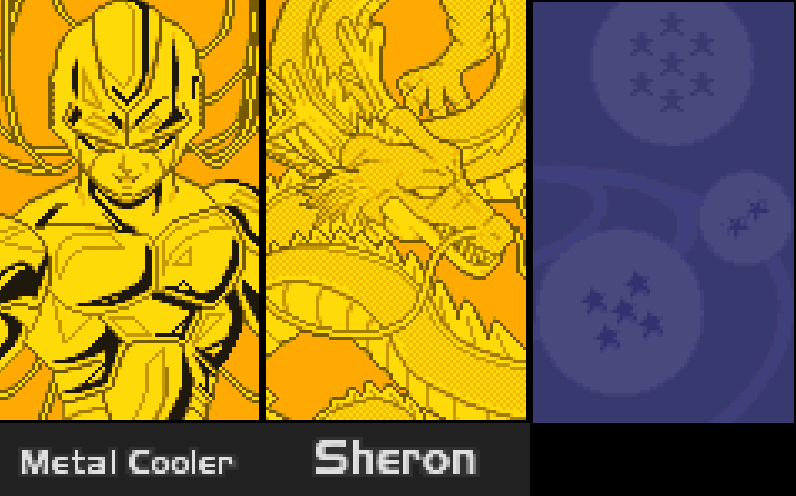
On atteint l'équipe n°6 qui est comme l'équipe précédente sauf que l'équipe sera composée de :
Cell et Cell Jr
Les raisons pour cette équipe sont :
Pour la stratégie a adoptée, passons en revue les qualités des personnages et voyons ce que l'on peut faire avec :
Cell sera la seule solution offensive directe, cela sera suffisant grâce à ses attaques spéciales qui font des énormes dégâts comme son Eclair ultime qui est l'Attaque Spéciale de C-18, mais en plus grand, plus grande portée et surtout qui frappe plus fort. Il y aussi sa Vague ultime qui est excellent sur énormément de points: il couvre toute les portées, explose à l'impact et fait super mal et enfin son Kamehameha qui va très loin et vise le haut avec un angle en biais pour éviter les esquives. Sa capacité lui permet de se booster et donc de frapper encore plus fort, mais, seulement s'il est à 30% de Pv ou moins.
Cell Jr est un personnage support fort intéressant seulement 2 DP , il a certes des dégâts qui ne font pas réver, mais sa force réside dans le fait qu'il gênera l'adversaire, en attaquant par derrière et l'empêchant de bouger.
Pour ici, la stratégie sera concentrée autour Metal Cooler uniquement mais aussi de l'utilisation de Shenron :
Tout au long du combat, l'objectif sera de foncer sur l'ennemi et de le détruire très rapidement. Grâce à ses attaques spéciales, il pourrra finir rapidement. Si l'ennemi s'approche trop utilisez l'attaque spéciale standart qui l'éloignera directement, s'il est trop loin utilisez les deux autres qui lui fera encore plus mal et l'atteindront. Dans ce cas de figure, Cell Jr sera pertinent dans le cas où Cell est à cours de ki et qu'il faut le charger ou bien qu'il a besoin d'une ouverture pour frapper, il pourra même faire de bons dégâts ce qui permet de finir l'ennemi encore plus vite.
Difficulté:
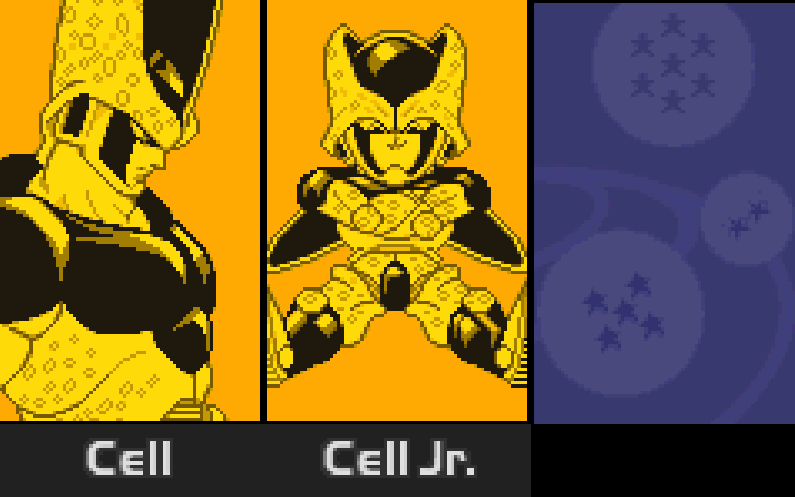
On termine la liste des équipes ayant 9 DP maximum avec l'équipe n°7 qui est basée sur Bardock mais qui aura deux variantes:
Les raisons pour cette équipe sont :
Pour la stratégie a adoptée, passons en revue les qualités des personnages et voyons ce que l'on peut faire avec :
Gohan Super Saiyan 2, il est fait du même bois que Cell, il frappe très fort, très rapidement et possède des attaques spéciales qui font auddi mal que Cell, mais elles ont un usage différent: son Kamehameha est aussi puissant que celui de Goku en Super Saiyan, si ce n'est plus, il garde le même usage et les mêmes caractéristiques, son Masenretsudan n'est pas fait pour faire des dégâts mais pour embêter l'adversaire, le tenir à distance et enfin son Magekidan est fort utile pout faire de gros dégâts et éloigner les adversaires s'approchant par le haut, cette attaque a une portée verticale immense et fait des dégâts sur l'entièreté de l'attaque. Sa capacité est plutôt utile quand il y a un deuxième combattant, elle s'activera uniquement si un allié est mit KO et que Gohan arrive sur le terrain, cela lui augmentera son attaque.
Quant à Broly, il a des attaques spéciales qui font des dégâts titanesques comme avec sa Coque explosive qui est une attaque Spéciale qui est lancé sur l'ennemi et qui en plus de lui faire super mal, lui fait du recul et l'immbolise durant un instant, son Geyser Planétaire est une immense colonne d'énergie qui fait remonté l'ennemi, lui fait mal et en plus Broly peut l'enchaîner durant l'attaque tout en étant invincible et enfin son Pic Géant et une projection qui bascule l'ennemi vers le sol et le renvoit au dessus de Broly qui peut enchaîner avec n'importe quoi. Sa capacité est là pour encore plus lui faire augmenter ses dégâts, quand il y a Son Goku en face, il frappe beaucoup plus fort, ce qui littéralement mettre KO après quelques coups, n'importe quel personnage non boss du jeu.
Bardock est un personnage support excellent pour uniquement 2 DP , son but est de rechargé le Ki à 200 instantanément.
Pour ici, la stratégie sera concentrée autour de Bardock et de comment il peut aider le personnage à 5 DP (Goku Super Saiyan ou Vegeta Super Saiyan), la stratégie sera la même quelque soit le combattant:
Pour Gohan ou Broly l'approche sera la même, il faudra foncer sur l'adversaire et juste attaquer, n'hésitez pas à user de Bardock pour recharger votre ki et agresser l'adversaire avec vos attaques spéciales, particulièrement avec Broly qui peut bloquer l'adversaire et le tuer en quelques coups bien placés, pour Gohan, ce sera différent, il ne fera pas autant mais il fera surtout mal avec sa vitesse et sa pression, pour ses spéciaux, vous pouvez bloquer l'adversaire avec l'attaque spéciale basse.
Difficulté:
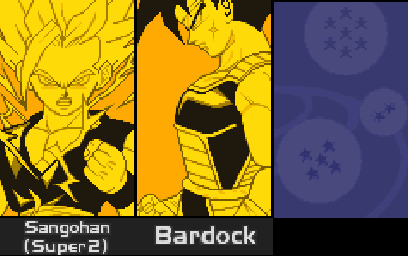
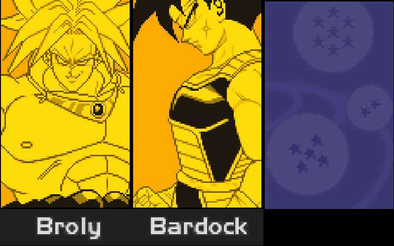
Liste d'équipes n°3: Les Equipes pour 12 DP
On commence avec les équipes ayant comme maximum 12 DP avec l'équipe n°1 composée de Goku et Vegeta Super Saiyan accompagné de Bardock
Les raisons pour cette équipe sont :
Pour la stratégie a adoptée, passons en revue les qualités des personnages et voyons ce que l'on peut faire avec :
Goku Super Saiyan et Vegeta Super Saiyan sont semblables sur plusieurs points: ils sont des versions améliorées de Goku et Vegeta. Ils ont en communs une meilleure vitesse, une meilleure force de frappe et surtout de meilleures attaques spéciales. Pour Goku, il garde son Kamehameha mais ce dernier est plus grand et fait plus mal, son attaque spécial haute devient le Super Tir qui est chargeable, peut prendre sur toutes les portées et surtout plus il est chargé, plus il fera de dégâts, lors du chargement complet, il peut retiré le quart de la vie d'un personnage d'un seul coup. Sinon son attaqu spéciale basse est le super tirs qui est simplement un enchaînement rapide de kikohas qui gêne l'ennemi et en plus qui fait mal tout en gardant une pression constante car compliqué à esquiver ou encaisser.
Quant à Vegeta,on s'appuie sur le même principe, sauf que son Galick Gun devient le Final Flash qui comme Goku fait plus mal et est plus grand, son attaque spécial basse devient une charge qui n'est pas blocable et met l'ennemi en dessous de soi et enfin comme Goku, il a une attaque chargée le Big Bang Attack, qui comme Goku fait plus mal si on charge longtemps.
Bardock est un personnage support excellent pour uniquement 2 DP , son but est de rechargé le Ki à 200 instantanément.
La stratégie se reposera sur Bardock et la force des frappes des deux SSJ:
Le but de Bardock sera d'aider Goku et Vegeta en leur fournissant le maximum de ki, ce qui leur permettra de vaincre rapidement les adversaires en leur balançant des attaques spéciales sans arrêt et de toujours avoir du ki. Egalement grâce à Bardock, Goku pourra se téléporter grâce à sa compétence et Vegeta se booster. S'il le combattant perd trop de PV, ils pourront balancer leur Attaque Ultime et en finir avec l'ennemi, juste pour Vegeta il faut être au dessus de l'ennemi et proche. Sans oublier que grâce à Bardock, ils pourront abuser également de leur attaque en duo, ce qui permet de faire super mal en un rien de temps
Difficulté:
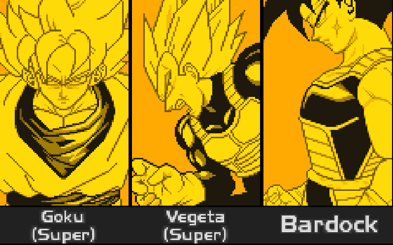
On continue avec l'équipe n°2 qui est basée sur les 4 personnages ayant 6 DP chacun
Les raisons pour cette équipe sont :
Les 4 personnages choisis sont semblables sur plusieurs points: ce sont les personnages qui sont les plus complets du jeu en dehors de ceux ayant 7DP:
Boo est un personnage qui tape fort, mais qui a surtout des compétences pour le combat rapproché et la longévité au combat. Ses attaques spéciales n'ont pas toujours une très bonne portée sauf pour l'Attaque Spéciale haute: Explosion de colère qui par contre, atteint quasiment toute la surface du terrain. Autrement les deux autres attaques spéciales sont là pour éloigner l'ennemi et garder la distance. Pour finir sa capacité lui permet de se soigner, ce qui est très fort pour un personnage lent comme lui.
Quant à Cell, il a des attaques spéciales qui font des énormes dégâts comme son Eclair ultime qui est l'Attaque Spéciale de C-18, mais en plus grand, plus grande portée et surtout qui frappe plus fort. Il y aussi sa Vague ultime qui est excellent sur énormément de points: il couvre toute les portéers, explose à l'impact et fait super mal et enfin son Kamehameha qui va très loin et vise le haut avec un angle en biais pour éviter les esquives. Sa capacité lui permet de se booster et donc de frapper encore plus fort, mais, seulement s'il est à 30% de Pv ou moins.
Quant à Gohan Super Saiyan 2, il est fait du même bois que Cell, il frappe très fort, très rapidement et possède des attaques spéciales qui font auddi mal que Cell, mais elles ont un usage différent: son Kamehameha est aussi puissant que celui de Goku en Super Saiyan, si ce n'est plus, il garde le même usage et les mêmes caractéristiques, son Masenretsudan n'est pas fait pour faire des dégâts mais pour embêter l'adversaire, le tenir à distance et enfin son Magekidan est fort utile pout faire de gros dégâts et éloigner les adversaires s'approchant par le haut, cette attaque a une portée verticale immense et fait des dégâts sur l'entièreté de l'attaque. Sa capacité est plutôt utile quand il y a un deuxième combattant, elle s'activera uniquement si un allié est mit KO et que Gohan arrive sur le terrain, cela lui augmentera son attaque.
Quant à Broly, il a des attaques spéciales qui font des dégâts titanesques comme avec sa Coque explosive qui est une attaque Spéciale qui est lancé sur l'ennemi et qui en plus de lui faire super mal, lui fait du recul et l'immbolise durant un instant, son Geyser Planétaire est une immense colonne d'énergie qui fait remonté l'ennemi, lui fait mal et en plus Broly peut l'enchaîner durant l'attaque tout en étant invincible et enfin son Pic Géant et une projection qui bascule l'ennemi vers le sol et le renvoit au dessus de Broly qui peut enchaîner avec n'importe quoi. Sa capacité est là pour encore plus lui faire augmenter ses dégâts, quand il y a Son Goku en face, il frappe beaucoup plus fort, ce qui littéralement mettre KO après quelques coups, n'importe quel personnage non boss du jeu.
Pour ces équipes la stratégie sera la même: Foncez et tout casser. Mais pour chaque équipe, on doit faire attention à certaines choses
Notes pour l'équipe 2-1
Les deux personnages auront le même rôle, qui est de tout détruire sans trop réfléchir, seulement on conseillera de jouer Cell, en premier afin qu'à 30% de ses Pv, il active sa compétence et termine le tout. S'il perd, Gohan reprendra le flambeau en activant sa compétence.
Notes pour l'équipe 2-2
On peut quasiment avoir le même raisonnement avec cette équipe, sauf que les deux personnages sont lents par rapports aux autres, notamment Boo. Broly sera la partie offensive de l'équipe qui balayera les ennemis avec ses attaques, quant à Boo, il pourra compter sur sa régénération et son contrôle pour affaiblir l'adversaire. Vous pouvez jouer Broly en premier, puis Boo en deuxième ou inversement cela reste viable.
Notes pour l'équipe 2-3 et 2-4
Vous pouvez prendre les notes de l'équipe 2-1, car finalement le but ici, sera de foncer dans le tas et frapper tout le monde. Les deux équipes sont quasiment les mêmes car elles sont composées d'un personnage rapide et fort et d'un autre lent et puissant. Pouer l'équipe avec Cell (la 2-3), faites attention avec les spéciaux car les deux attaques spéciales hautes et basses ont de la portée mais l'attaque spéciale basique pas autant, si ce n'est juste sur le devant au corps-à-corps.
Difficulté pour les équipes:
Equipe 2-1
Equipe 2-2
Equipe 2-3
Equipe 2-4
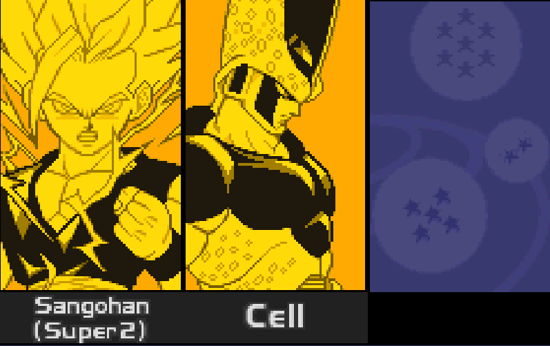
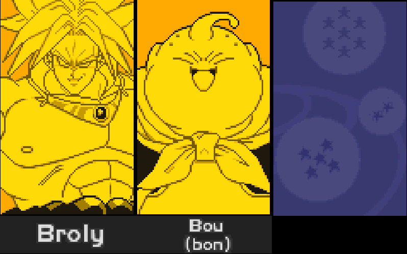
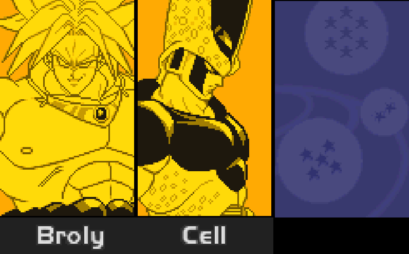
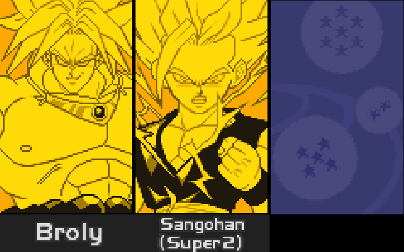
On poursuit avec l'équipe n°3 qui est basée sur Gotenks Super Saiyan 3 mais avec deux variantes possibles:
Les raisons pour cette équipe sont :
Passons d'abord en revue ce que les personnages peuvent faire d'intéressant:
Goku Super Saiyan et Vegeta Super Saiyan sont semblables sur plusieurs points: ils sont des versions améliorées de Goku et Vegeta. Ils ont en communs une meilleure vitesse, une meilleure force de frappe et surtout de meilleures attaques spéciales. Pour Goku, il garde son Kamehameha mais ce dernier est plus grand et fait plus mal, son attaque spécial haute devient le Super Tir qui est chargeable, peut prendre sur toutes les portées et surtout plus il est chargé, plus il fera de dégâts, lors du chargement complet, il peut retiré le quart de la vie d'un personnage d'un seul coup. Sinon son attaqu spéciale basse est le super tirs qui est simplement un enchaînement rapide de kikohas qui gêne l'ennemi et en plus qui fait mal tout en gardant une pression constante car compliqué à esquiver ou encaisser.
Quant à Vegeta,on s'appuie sur le même principe, sauf que son Galick Gun devient le Final Flash qui comme Goku fait plus mal et est plus grand, son attaque spécial basse devient une charge qui n'est pas blocable et met l'ennemi en dessous de soi et enfin comme Goku, il a une attaque chargée le Big Bang Attack, qui comme Goku fait plus mal si on charge longtemps.
Gotenks Super Saiyan 3 est un personnage qui a des spéciaux impressionants, son Attaque du Sanglier permet de foncer sur l'adversaire et de passer outre certaines attaques, son Beignet Galactique est une charge qui en plus d'aller vite, fait super mal et permet d'être au dessus de l'adversaire à la fin de l'attaque pour enfin parler de l'attaque qui est sans doute la plus puissante du jeu: les SGKA ou les Super Ghost Kamikaze Attack qui sont en fait plusieurs fantômes explosifs lancés sur l'adversaire. Sa capacité permet de le bosster encore plus.
Ici l'objectif est simpliste :Frapper fort et vite sans devoir trop réfléchir. Dans les deux équipes, vous pouvez jouer qui vous souhaitez en premier, mais faites attention à garder Gotenks tout au long de la partie, afin que ses dégâts soient mis à disposition de manière corrects.
Difficulté:
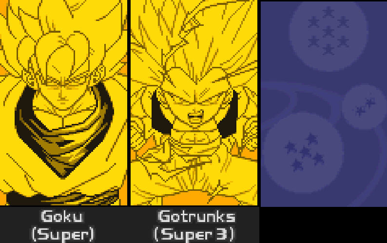
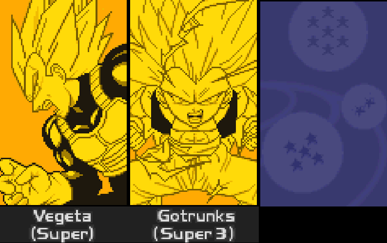
On enchaîne avec l'équipe n°4 qui est une équipe basée sur Metal Cooler combinés à 2 puissants personnages : Broly et Cell
Voici les équipes proposées seront les suivants
Les raisons pour ces 2 équipes sont :
Passons d'abord en revue ce que les personnages peuvent faire d'intéressant:
Metal Cooler sera ici le pivot de l'équipe et la condition de victoire de cette dernière, du haut de ses 5 DP il possède des attaques et de compétences très intéressantes: Il a son Blaster de la mort qui couvre la moyenne portée et fait de bons dégâts tout en immobilisant l'ennemi, son Smash centrale est parfait pour frapper le centre et sur la longue distance, tout en envoyant l'ennemi au loin et enfin son Nid de glace est excellent, il couvre la longue portée tout en faisant de meilleurs dégâts et fait réculer l'ennemi, si on maintiens le bouton plus longtemps. Pour sa compétence, c'est là que le personnage est redoutable car s'il meurt mais qu'il a 150% d'énergie alors il revient à la vie, ce qui peut renverser le combat.
Au niveau de Broly, on peut toujours rappeler qu'il a des attaques spéciales qui font des dégâts titanesques comme avec sa Coque explosive qui est une attaque Spéciale qui est lancé sur l'ennemi et qui en plus de lui faire super mal, lui fait du recul et l'immbolise durant un instant, son Geyser Planétaire est une immense colonne d'énergie qui fait remonté l'ennemi, lui fait mal et en plus Broly peut l'enchaîner durant l'attaque tout en étant invincible et enfin son Pic Géant et une projection qui bascule l'ennemi vers le sol et le renvoit au dessus de Broly qui peut enchaîner avec n'importe quoi. Sa capacité est là pour encore plus lui faire augmenter ses dégâts, quand il y a Son Goku en face, il frappe beaucoup plus fort, ce qui littéralement mettre KO après quelques coups, n'importe quel personnage non boss du jeu.
Quant à Cell a des attaques spéciales qui font des énormes dégâts comme son Eclair ultime qui est l'Attaque Spéciale de C-18, mais en plus grand, plus grande portée et surtout qui frappe plus fort. Il y aussi sa Vague ultime qui est excellent sur énormément de points: il couvre toute les portées, explose à l'impact et fait super mal et enfin son Kamehameha qui va très loin et vise le haut avec un angle en biais pour éviter les esquives. Sa capacité lui permet de se booster et donc de frapper encore plus fort, mais, seulement s'il est à 30% de Pv ou moins.
L'objectif de ces deux équipes est de pouvoir démolir l'adversaire tout en pouvant faire durer le combat et garder nos deux personnages, grâce à la régénération post-mortem de Metal Cooler, il rallonge sa durée de vie d'un tout petit peu et pourra changer sa place avec Cell ou Broly, pour que ces derniers prennent le relais et se battent l'un comme l'autre, ils sont les armes pour démolir le reste de l'équipe, s'il en reste encore. Avec ces personnages, il ne faut pas trop réfléchir, mais le petit conseil à prendre est que Cell ou Broly pourront généralement être juste là en finisher car Metal Cooler arrivera à se battre assez longtemps.
Difficulté:
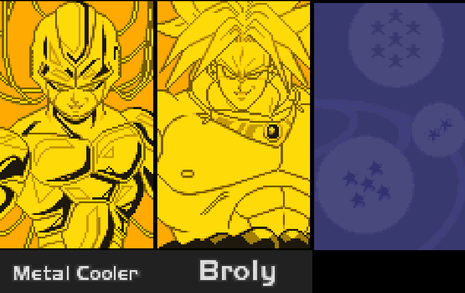
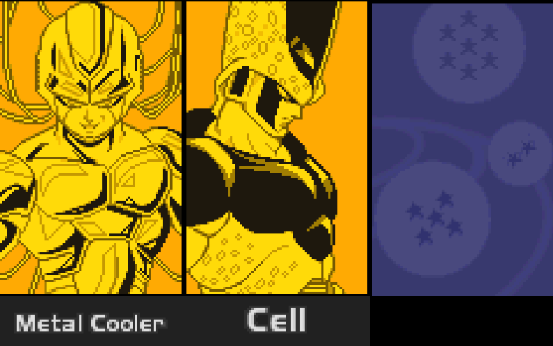
On termine avec l'équipe n°5 qui est encore basée sur Boo (Mauvais) mais qui sera accompagné de Mr Satan
Les raisons pour cette équipe sont :
Pour la stratégie a adoptée, passons en revue les qualités des personnages et voyons ce que l'on peut faire avec :
Boo (Mauvais) est un personnage surpuissant qui possède des attaques spéciales incroyables: Il a la Plongée Furieuse qui est une projection quasiment inévitable si tu n'esquives pas ou si tu lui fais pas subir des dégâts avant, il plongera sur toi et te feras des dégâts, c'est parfait pour briser la garde de l'ennemi ou pour approcher un personnage trop compliqué à attaquer. Il a également la Pluie Offensive qui permet d'empêcher les adversaires de s'approcher et possède une excellente portée verticale, enfin son Brise Zex est l'une des meilleures attaques possibles, il projette de l'électricité qui immobilise l'ennemi et ce dernier ne peut rien. Il possède une capacité qui est très intéressante, lors de son activation, la jauge de défense augmentera, ce qui pourra briser plus facilement la garde de l'ennemi et donc le frapper.
Mr Satan, est un personnage support excellent pour uniquement 1 DP , c'est le meilleur support en dehors de Bardock, qui possède le Dp le plus bas, mais pour l'utilité la plus grande, ce personnage apparaît et lance des bombes dans tous les sens, littéralement il est imprévisible et fait super mal, ce qui permet d'immboliser, blesser l'adversaire et de laisser une faille au combattant pour vaincre l'ennemi en face.
Pour ici, la stratégie sera concentrée autour de Mr Satan et de comment peut il aidé Boo dans le combat :
Pour Boo, l'objectif sera de foncer sur l'ennemi et de le détruire très rapidement. Grâce à ses attaques spéciales, il pourrra finir rapidement. Si l'ennemi s'approche trop utilisez ses attaques spéciales qui briseront sa garde ou le maintiendront à bonne distance. Autrement Mr Satan sera pertinent dans le cas où Boo est à cours de ki et qu'il faut le charger ou bien qu'il a besoin d'une ouverture pour frapper, ou simplement s'il a besoin de faire mal et de rajouter des dégâts derrière pour finir le combat. En combinant sa capacité, ses dégâts et Mr Satan, il peut vaincre très facilement ses adversaires mais faites attention, Mr Satan ne peut être activé que 5 fois par combat.
Difficulté:
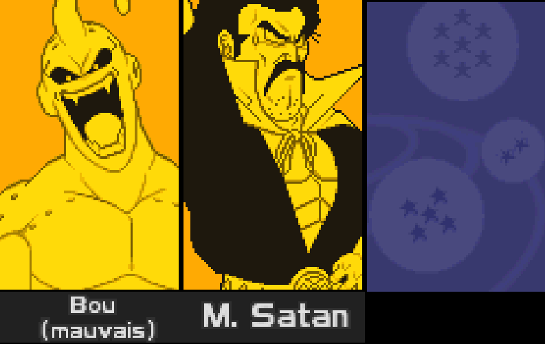
Liste d'équipes n°4: Les Equipes pour 17 DP
Pour commencer les équipes ayant comme maximum 17 DP, la première équipe sera composée des 3 Super Saiyans du jeu:
Les raisons pour cette équipe sont :
Passons d'abord en revue ce que les personnages peuvent faire d'intéressant:
Goku Super Saiyan et Vegeta Super Saiyan sont semblables sur plusieurs points: ils sont des versions améliorées de Goku et Vegeta. Ils ont en communs une meilleure vitesse, une meilleure force de frappe et surtout de meilleures attaques spéciales. Pour Goku, il garde son Kamehameha mais ce dernier est plus grand et fait plus mal, son attaque spécial haute devient le Super Tir qui est chargeable, peut prendre sur toutes les portées et surtout plus il est chargé, plus il fera de dégâts, lors du chargement complet, il peut retiré le quart de la vie d'un personnage d'un seul coup. Sinon son attaque spéciale basse est le super tirs qui est simplement un enchaînement rapide de kikohas qui gêne l'ennemi et en plus qui fait mal tout en gardant une pression constante car compliqué à esquiver ou encaisser. Sa compétence est la téléportation qu'il peut utiliser pour aller à l'opposé d'où il était et mettre de la distance entre lui ou son adversaire ou la rompre pour mieux le surprendre.
Quant à Vegeta,on s'appuie sur le même principe, sauf que son Galick Gun devient le Final Flash qui comme Goku fait plus mal et est plus grand, son attaque spécial basse devient une charge qui n'est pas blocable et met l'ennemi en dessous de soi et enfin comme Goku, il a une attaque chargée le Big Bang Attack, qui comme Goku fait plus mal si on charge longtemps. Pour sa capacité, si un adversaire possède un DP supérieur à lui, il augmentera son attaque, ce qui est assez pratique car dans la fin du Mode Maximum, les 3/4 des ennemis possèdent un plus grand DP que lui, ce qui est assez efficace.
Pour Trunks ,c'est presque la même chose, sauf qu'on remplace les coups d'épée par des projectiles d'énergies, son attaque spécial devient le Buster Cannon qui est utile pour toutes les portées et fait de bons dégâts, son attaque spécial basse devient le Buster Final qui est un énorme rayon d'énergie qui fait très mal et enfin comme Goku, il a une attaque chargée le Tir rapide, qui comme Goku fait plus mal si on charge longtemps. Pour ce qui est de sa capacité, Trunks peut simplement se booster en attaque et frapper plus fort.
La stratégie a adopée est la suivante: Garder Vegeta en vie et à utiliser ce dernier à la toute fin.
Lors du combat, commencez avec Son Goku et n'hésitez pas à envoyez vos spéciaux et votre attaque en duo, continuez jusqu'à que Goku soit Ko ou bien directement après qu'il ait utilisé son attaque ultime, changez sur Trunks. Faites à peu près la même chose qu'avec Goku et essayez de gagner le combat, autrement Vegeta se chargera du reste. Dans tous les cas vous avez à votre disposition: 3 Attaques Ultimes, 2 Attaques en Duo supruissantes et 3 Attaques Spéciales puissantes pour chaque personnages.
Difficulté:
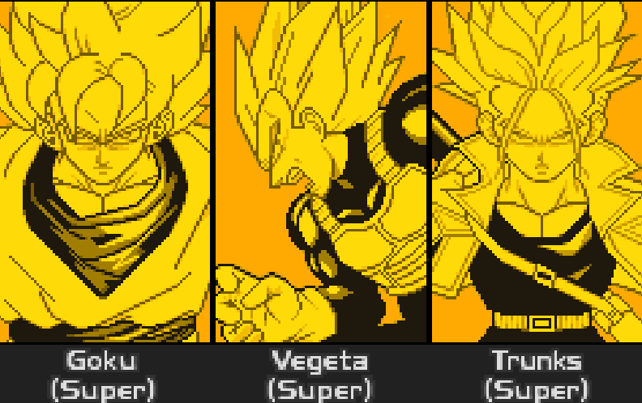
On continue avec la deuxième équipe qui sera composée des 3 Saiyans les plus puissants du jeu:
Les raisons pour cette équipe sont :
Passons d'abord en revue ce que les personnages peuvent faire d'intéressant:
Goku Super Saiyan et Vegeta Super Saiyan sont semblables sur plusieurs points: ils sont des versions améliorées de Goku et Vegeta. Ils ont en communs une meilleure vitesse, une meilleure force de frappe et surtout de meilleures attaques spéciales. Pour Goku, il garde son Kamehameha mais ce dernier est plus grand et fait plus mal, son attaque spécial haute devient le Super Tir qui est chargeable, peut prendre sur toutes les portées et surtout plus il est chargé, plus il fera de dégâts, lors du chargement complet, il peut retiré le quart de la vie d'un personnage d'un seul coup. Sinon son attaque spéciale basse est le super tirs qui est simplement un enchaînement rapide de kikohas qui gêne l'ennemi et en plus qui fait mal tout en gardant une pression constante car compliqué à esquiver ou encaisser. Sa compétence est la téléportation qu'il peut utiliser pour aller à l'opposé d'où il était et mettre de la distance entre lui ou son adversaire ou la rompre pour mieux le surprendre.
Quant à Vegeta,on s'appuie sur le même principe, sauf que son Galick Gun devient le Final Flash qui comme Goku fait plus mal et est plus grand, son attaque spécial basse devient une charge qui n'est pas blocable et met l'ennemi en dessous de soi et enfin comme Goku, il a une attaque chargée le Big Bang Attack, qui comme Goku fait plus mal si on charge longtemps. Pour sa capacité, si un adversaire possède un DP supérieur à lui, il augmentera son attaque, ce qui est assez pratique car dans la fin du Mode Maximum, les 3/4 des ennemis possèdent un plus grand DP que lui, ce qui est assez efficace.
Quant à Broly, il a des attaques spéciales qui font des dégâts titanesques comme avec sa Coque explosive qui est une attaque Spéciale qui est lancé sur l'ennemi et qui en plus de lui faire super mal, lui fait du recul et l'immbolise durant un instant, son Geyser Planétaire est une immense colonne d'énergie qui fait remonté l'ennemi, lui fait mal et en plus Broly peut l'enchaîner durant l'attaque tout en étant invincible et enfin son Pic Géant et une projection qui bascule l'ennemi vers le sol et le renvoit au dessus de Broly qui peut enchaîner avec n'importe quoi. Sa capacité est là pour encore plus lui faire augmenter ses dégâts, quand il y a Son Goku en face, il frappe beaucoup plus fort, ce qui littéralement mettre KO après quelques coups, n'importe quel personnage non boss du jeu.
La stratégie a adopée est différente de la précédente: Garder si possible Broly en dernier et faites en sorte que Goku et Vegeta battent un maximum d'ennemis.
Lors du combat, commencez avec Son Goku et n'hésitez pas à envoyez vos spéciaux et votre attaque en duo, continuez jusqu'à que Goku soit Ko ou bien directement après qu'il ait utilisé son attaque ultime, changez sur Vegeta. Faites à peu près la même chose qu'avec Goku et essayez de gagner le combat, autrement Broly se chargera du reste et détruira l'adversaire et ce qui en reste. Dans tous les cas vous avez à votre disposition: 3 Attaques Ultimes, 1 Attaque en Duo supruissante et 3 Attaques Spéciales puissantes pour chaque personnages.
Difficulté:
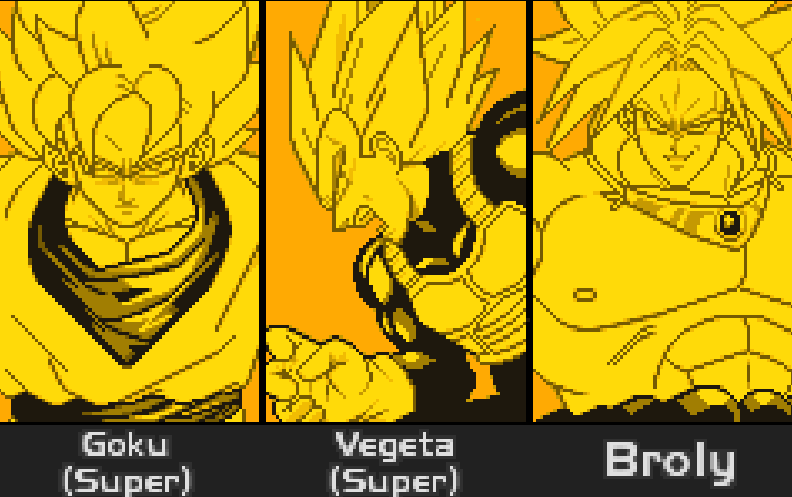
On poursuit avec l'équipe n°3 qui accueilera les 3 grand antagonistes de la franchise:
Voici les raisons de cette équipe:
Freezer sera sans doute le plus faible de l'équipe, mais pour autant, il a malgré les 2 DP qu'il possède des attaques et de compétences intéressantes: Il a sa Vague de la Mort qui couvre la longue portée et fait de bons dégâts, son Rayon de la Mort est parfait pour la longue portée, car il va plutôt loin et fait plutôt mal et enfin son Explosion psychique qui est parfait pour couvrir la moyenne portée tout en faisant de bons dégâts et les rochers peuvent poursuivre l'adversaire. Egalement il peut compter sur sa capacité pour se booster et faire plus mal.
Quant à Cell a des attaques spéciales qui font des énormes dégâts comme son Eclair ultime qui est l'Attaque Spéciale de C-18, mais en plus grand, plus grande portée et surtout qui frappe plus fort. Il y aussi sa Vague ultime qui est excellent sur énormément de points: il couvre toute les portées, explose à l'impact et fait super mal et enfin son Kamehameha qui va très loin et vise le haut avec un angle en biais pour éviter les esquives. Sa capacité lui permet de se booster et donc de frapper encore plus fort, mais, seulement s'il est à 30% de Pv ou moins.
Boo (Mauvais) est également un personnage surpuissant qui possède des attaques spéciales incroyables: Il a la Plongée Furieuse qui est une projection quasiment inévitable si tu n'esquives pas ou si tu lui fais pas subir des dégâts avant, il plongera sur toi et te feras des dégâts, c'est parfait pour briser la garde de l'ennemi ou pour approcher un personnage trop compliqué à attaquer. Il a également la Pluie Offensive qui permet d'empêcher les adversaires de s'approcher et possède une excellente portée verticale, enfin son Brise Zex est l'une des meilleures attaques possibles, il projette de l'électricité qui immobilise l'ennemi et ce dernier ne peut rien. Tout comme Gotenks, il possède une capacité qui est très intéressante, lors de son activation, la jauge de défense augmentera, ce qui pourra briser plus facilement la garde de l'ennemi et donc le frapper.
La stratégie a adoptée ici c'est d'éviter de faire mourir Freezer trop vite, mais il faut conserver Boo et Cell, assez longtemps, car ce seront eux la force de frappe majeure de l'équipe, mais avec Freezer, faites les premiers dégâts et n'hésitez pas à utiliser Freezer, pour charger votre ki ou pour temporiser en usant d'attaques en duo, pour affaiblir l'ennemi, si Freezer perd, passez à la suite. Combattez avec Cell et Boo et faites en sorte que l'adversaire tombe rapidement comme ça, ce sera fini, autrement avec Boo et sa capacité à quasi détruire la garde, on peut gagner facilement.
Difficulté:
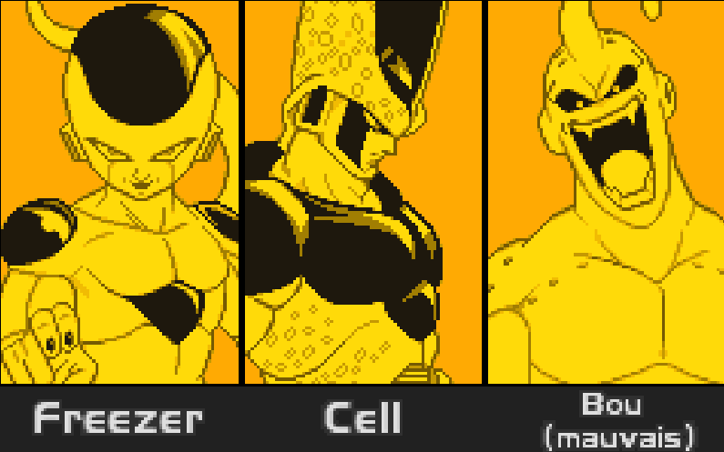
On est toujours avec une équipe d'antagonistes mais avec l'équipe n°4, on est plutôt sur une équipe regroupant les antagonistes les plus forts sans compter Boo:
Voici les raisons de cette équipe:
Passons d'abord en revue ce que les personnages peuvent faire d'intéressant:
Metal Cooler sera ici le pivot de l'équipe et la condition de victoire de cette dernière, du haut de ses 5 DP il possède des attaques et de compétences très intéressantes: Il a son Blaster de la mort qui couvre la moyenne portée et fait de bons dégâts tout en immobilisant l'ennemi, son Smash centrale est parfait pour frapper le centre et sur la longue distance, tout en envoyant l'ennemi au loin et enfin son Nid de glace est excellent, il couvre la longue portée tout en faisant de meilleurs dégâts et fait réculer l'ennemi, si on maintiens le bouton plus longtemps. Pour sa compétence, c'est là que le personnage est redoutable car s'il meurt mais qu'il a 150% d'énergie alors il revient à la vie, ce qui peut renverser le combat.
Au niveau de Broly, on peut toujours rappeler qu'il a des attaques spéciales qui font des dégâts titanesques comme avec sa Coque explosive qui est une attaque Spéciale qui est lancé sur l'ennemi et qui en plus de lui faire super mal, lui fait du recul et l'immbolise durant un instant, son Geyser Planétaire est une immense colonne d'énergie qui fait remonté l'ennemi, lui fait mal et en plus Broly peut l'enchaîner durant l'attaque tout en étant invincible et enfin son Pic Géant et une projection qui bascule l'ennemi vers le sol et le renvoit au dessus de Broly qui peut enchaîner avec n'importe quoi. Sa capacité est là pour encore plus lui faire augmenter ses dégâts, quand il y a Son Goku en face, il frappe beaucoup plus fort, ce qui littéralement mettre KO après quelques coups, n'importe quel personnage non boss du jeu.
Quant à Cell a des attaques spéciales qui font des énormes dégâts comme son Eclair ultime qui est l'Attaque Spéciale de C-18, mais en plus grand, plus grande portée et surtout qui frappe plus fort. Il y aussi sa Vague ultime qui est excellent sur énormément de points: il couvre toute les portées, explose à l'impact et fait super mal et enfin son Kamehameha qui va très loin et vise le haut avec un angle en biais pour éviter les esquives. Sa capacité lui permet de se booster et donc de frapper encore plus fort, mais, seulement s'il est à 30% de Pv ou moins.
La formation de l'équipe et la stratégie ressemble à l'équipe 3-4, car en plus d'avoir les mêmes personnages, les équipes ont le même objectif: pouvoir démolir l'adversaire tout en pouvant faire durer le combat. Sauf qu'on a la combinaison des deux variantes et là le but restera le même qui est de garder nos deux derniers personnages, tout en temporisant grâce à la régénération post-mortem de Metal Cooler qui il rallonge sa durée de vie d'un tout petit peu et pourra changer sa place avec Cell ou Broly, pour que ces derniers prennent le relais et se battent, l'un comme l'autre, ils sont les armes pour démolir le reste de l'équipe, s'il en reste encore. Avec ces 3 personnages, il ne faut pas trop réfléchir, si ce n'est un peu au début car Metal Cooler est puissant mais surtout technique. Autrement sur les niveaux compliqués, toute l'équipe sera utile car la fin du Mode Mania sera compliqué sans régénération et dégâts optimales
Difficulté:
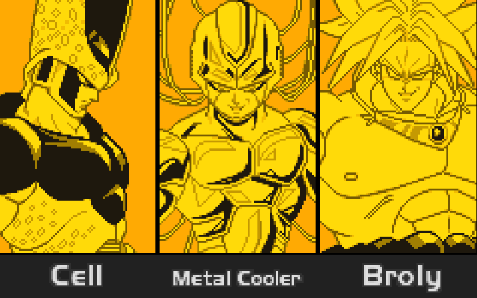
On poursuit avec l'équipe n°5 qui est une équipe ayant 3 variantes composées des meilleurs personnages:
Et les équipes proposées seront les suivants
Les raisons pour l'équipe 5-1 sont :
Les raisons pour l'équipe 5-2 sont :
Les raisons pour l'équipe 5-3 sont :
Passons d'abord en revue ce que les personnages peuvent faire d'intéressant:
Au niveau de Broly, on peut toujours rappeler qu'il a des attaques spéciales qui font des dégâts titanesques comme avec sa Coque explosive qui est une attaque Spéciale qui est lancé sur l'ennemi et qui en plus de lui faire super mal, lui fait du recul et l'immbolise durant un instant, son Geyser Planétaire est une immense colonne d'énergie qui fait remonté l'ennemi, lui fait mal et en plus Broly peut l'enchaîner durant l'attaque tout en étant invincible et enfin son Pic Géant et une projection qui bascule l'ennemi vers le sol et le renvoit au dessus de Broly qui peut enchaîner avec n'importe quoi. Sa capacité est là pour encore plus lui faire augmenter ses dégâts, quand il y a Son Goku en face, il frappe beaucoup plus fort, ce qui littéralement mettre KO après quelques coups, n'importe quel personnage non boss du jeu.
Quant à Cell a des attaques spéciales qui font des énormes dégâts comme son Eclair ultime qui est l'Attaque Spéciale de C-18, mais en plus grand, plus grande portée et surtout qui frappe plus fort. Il y aussi sa Vague ultime qui est excellent sur énormément de points: il couvre toute les portées, explose à l'impact et fait super mal et enfin son Kamehameha qui va très loin et vise le haut avec un angle en biais pour éviter les esquives. Sa capacité lui permet de se booster et donc de frapper encore plus fort, mais, seulement s'il est à 30% de Pv ou moins.
Gotenks Super Saiyan 3 est un personnage qui a des spéciaux impressionants, son Attaque du Sanglier permet de foncer sur l'adversaire et de passer outre certaines attaques, son Beignet Galactique est une charge qui en plus d'aller vite, fait super mal et permet d'être au dessus de l'adversaire à la fin de l'attaque pour enfin parler de l'attaque qui est sans doute la plus puissante du jeu: les SGKA ou les Super Ghost Kamikaze Attack qui sont en fait plusieurs fantômes explosifs lancés sur l'adversaire. Sa capacité permet de le bosster encore plus.
Boo (Mauvais) est également un personnage surpuissant qui possède des attaques spéciales incroyables: Il a la Plongée Furieuse qui est une projection quasiment inévitable si tu n'esquives pas ou si tu lui fais pas subir des dégâts avant, il plongera sur toi et te feras des dégâts, c'est parfait pour briser la garde de l'ennemi ou pour approcher un personnage trop compliqué à attaquer. Il a également la Pluie Offensive qui permet d'empêcher les adversaires de s'approcher et possède une excellente portée verticale, enfin son Brise Zex est l'une des meilleures attaques possibles, il projette de l'électricité qui immobilise l'ennemi et ce dernier ne peut rien. Tout comme Gotenks, il possède une capacité qui est très intéressante, lors de son activation, la jauge de défense augmentera, ce qui pourra briser plus facilement la garde de l'ennemi et donc le frapper.
Ici l'objectif est simpliste :Frapper fort et vite.
Peut importe qui vous avez, le schéma sera simple:
Faites en sorte que vous ne manquez pas de ki et n'hésitez pas à user de vos spéciaux pour garder la distance avec l'adversaire, notamment avec Broly qui semble plutôt lent en comparaison avec ses coéquipiers. Sinon avec les personnages rapides comme Cell ou Gotenks, ou même Boo agressez l'adversaire en ne le laissant pas respirer, avec Boo activez votre compétence et terminez les avec des boules d'énergies ou de simples coups puissants pour les tuer. Avec Gotenks harcelez les avec vos SGKA, qui feront le travail, vous n'aurez plus qu'à attaquer à travers et c'est fini.
Difficulté pour les équipes:
Equipe 5-1
Equipe 5-2
Equipe 5-3


Pour finir avec les équipes pertinentes pour 17 DP, on termine avec l'équipe n°6 qui contient les 2 personnages ayant le plus gros DP en individuel:
Les raisons pour cette équipe sont :
Pour la stratégie a adoptée, passons en revue les qualités des personnages et voyons ce que l'on peut faire avec :
Gotenks Super Saiyan 3 est un personnage qui a des spéciaux impressionants, son Attaque du Sanglier permet de foncer sur l'adversaire et de passer outre certaines attaques, son Beignet Galactique est une charge qui en plus d'aller vite, fait super mal et permet d'être au dessus de l'adversaire à la fin de l'attaque pour enfin parler de l'attaque qui est sans doute la plus puissante du jeu: les SGKA ou les Super Ghost Kamikaze Attack qui sont en fait plusieurs fantômes explosifs lancés sur l'adversaire. Sa capacité permet de le bosster encore plus.
Boo (Mauvais) est également un personnage surpuissant qui possède des attaques spéciales incroyables: Il a la Plongée Furieuse qui est une projection quasiment inévitable si tu n'esquives pas ou si tu lui fais pas subir des dégâts avant, il plongera sur toi et te feras des dégâts, c'est parfait pour briser la garde de l'ennemi ou pour approcher un personnage trop compliqué à attaquer. Il a également la Pluie Offensive qui permet d'empêcher les adversaires de s'approcher et possède une excellente portée verticale, enfin son Brise Zex est l'une des meilleures attaques possibles, il projette de l'électricité qui immobilise l'ennemi et ce dernier ne peut rien. Tout comme Gotenks, il possède une capacité qui est très intéressante, lors de son activation, la jauge de défense augmentera, ce qui pourra briser plus facilement la garde de l'ennemi et donc le frapper.
Pour cette équipe là, la stratégie ne sera pas aussi différente de d'habitude car ayant les 2 personnages les plus puissants, tout ce qui faudra faire c'est tout détruire. Le but ici sera de détruire directement l'adversaire, frappez l'ennemi avec vos coups surpuissants et ne le laisser pas respirer.
Pour Gotenks, n'hésitez pas à abuser de vos spéciaux pour mettre la pression et garder le rythme, grâce à votre vitesse vous pouvez vous déplacer très vite partout sur le terrain, utilisez le combot dévastateur qu'est la combinaison du Beignet Galactique et SGKA: le Beignet Kamikaze. L'adversaire ne pourra pas supporter les dégâts après cet enchaînement, le comble est que Gotenks peut faire plusieurs fois cette attaque qu'est le SGKA pour multiplier les fantômes et faire encore plus de dégâts à l'adversaire et si par hasard l'adversaire s'achappe il peut toujours le pourchasser et lui fair encore plus mal, le tout dans l'explosion comme ça il est intouchable. De plus si les dégâts de Gotenks ne semblent pas assez ravageurs, vous pouvez activer sa capacité qui augmentera son attaque et lui permettra de trouer encore plus l'équipe adverse.
Pour Boo, ce sera la même chose que pour Gotenks, sauf que Boo (Mauvais) pourra compter sur son Brise Zex qui pourra être cumulable et immobolisera l'adversaire tout au long de l'affrontement, en plus d'aller super loin, il pourra le combiner à son propre corps-à-corps qui fait très mal, ce qui in fine tuera l'adversaire rapidement. De plus si les dégâts et la pression exercée par Boo ne sont pas suffisantes, il possède une capacité qui à chaque attaque portée, augmente la jauge de garde, soit le risque que la garde soit brisée et donc la possibilité de faire encore plus mal. La pression qu'il exercera, sera encore plus grande et les ennemis ne pourront pas lutter face à ça.
Notes:
Vous pouvez prendre un support si vous en avez besoin, mais on détaillera cette option pour un autre moment.
Difficulté:
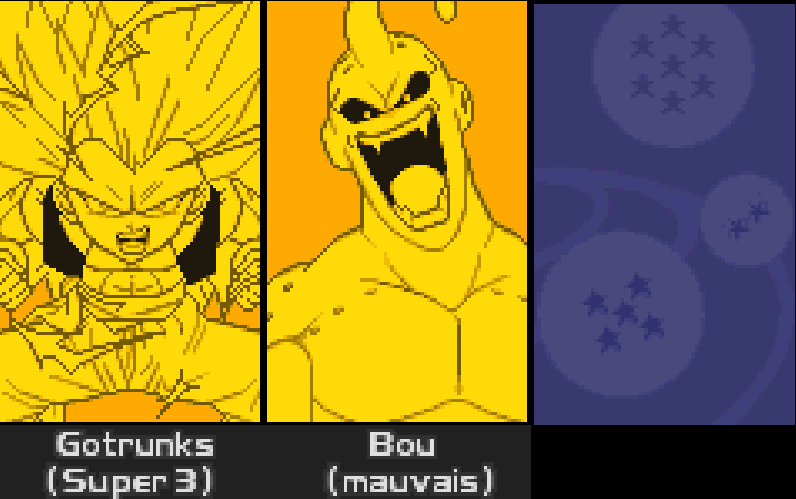